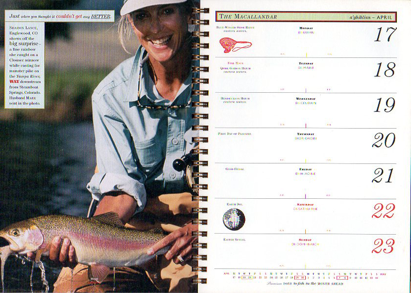

ABOUT THE PROJECT
From humble beginnings in 1824, The Macallan has grown from a small local enterprise to global recognition, based on a constant and determined attention to quality. Keeping with their traditions, a collaborative effort culminated each year in the production of "The Macallandar". A tactile datebook including fish tales and folklore of Scotland.

